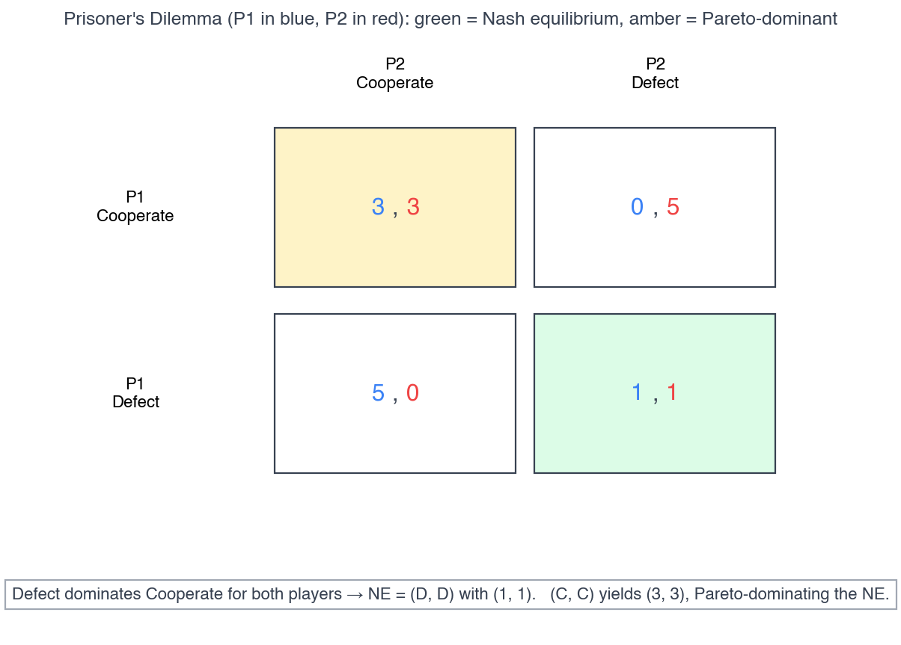
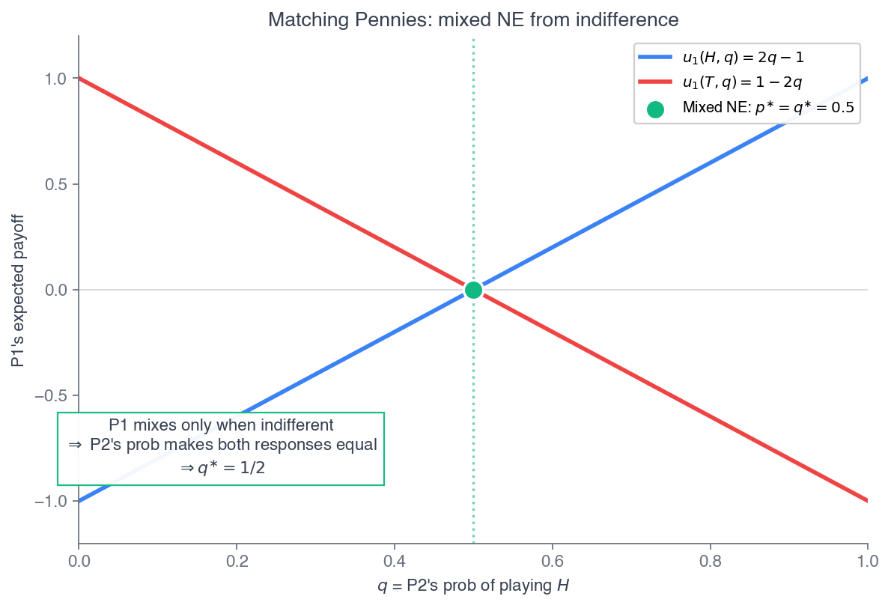

ECON 2316 • Microeconomic Theory • Chapter 14
Game Theory
Chapter 13 solved oligopoly games — Cournot, Bertrand, Stackelberg — but never asked what an equilibrium really is. Game theory is the machinery underneath: players, strategies, payoffs, and the one profile from which no one wants to deviate.
Dr. Richeng Piao
Department of Economics
Northeastern University — 100 min

Learning Objectives
By the end of class today, you will be able to…
1
Define a normal-form game and find Nash equilibria in pure strategies; apply dominance and iterated elimination. (Bloom L3)
2
Solve for mixed-strategy Nash equilibria using the indifference condition. (Bloom L4)
3
Solve sequential games by backward induction and identify the subgame-perfect equilibrium. (Bloom L4)
4
Derive the grim-trigger discount-factor threshold and explain when repetition sustains cooperation. (Bloom L5 — central result)
5
Apply the framework to real strategy — entry deterrence, OPEC+, algorithmic collusion, and auctions. (Bloom L3)
Ch 13 Solved the Games. Ch 14 Asks Why.
Ch 13 — the answers
- Cournot: symmetric output \(q^{\ast} = \frac{a-c}{(N+1)b}\)
- Bertrand: \(P = MC\) with two firms
- Stackelberg: leader rides the reaction curve
- We wrote FOCs and solved — but never asked why these are the right solutions
Ch 14 — the machinery
- What is an equilibrium? → Nash equilibrium
- Cournot = Nash of the quantity game
- Stackelberg = subgame-perfect equilibrium of the sequential game
- And: when can rivals sustain the cartel they all want?
One backbone, made explicit. A game is players, strategies, and payoffs that depend on the entire profile of choices. An equilibrium is a profile from which no player wants to deviate unilaterally — the Nash equilibrium (Nash 1950; Nobel 1994). Ch 13's solutions were all Nash equilibria; we just hadn't named the concept.
Two Gas Stations and One App
Two stations across a four-lane road sell identical unleaded, prices on tall signs. For decades they held an uneasy truce near \$3.30/gal — each watching the other, rarely cutting.
Late 2024: a price-comparison app (“FuelTrack”) let drivers see every station's price in one tap. Within six weeks both were undercutting each morning and rebuilding by evening — margins collapsed to cost plus card fees.
Same owners, same costs, same market size. One technology changed the speed information traveled — and the equilibrium flipped from coordination to undercutting.
\$3.30
old truce price
\$3.27
undercut, post-app
6 wk
to flip the equilibrium
1 tap
what changed
Game theory is the apparatus that tells us why the equilibrium moved. A game = players (the two stations), strategies (prices), payoffs (daily revenue, depending on both choices). The app didn't change the players or the costs — it changed the game, and the equilibrium followed. By the end of class you'll be able to write down the game behind any oligopoly story and predict how a parameter shift moves it.
Modeling frameworks
Game Theory vs. Decision Theory
Before the equilibria: the two ways economics models behavior — and where strategy breaks the mold
The Two Major Models of Economics as a “Science”
Optimization
- Agents have objectives they value
- Agents face constraints
- Make tradeoffs to maximize objectives within constraints
Equilibrium
- Agents compete with others over scarce resources
- Agents adjust behaviors based on prices
- Stable outcomes when adjustments stop
Both pillars belong to decision theory — the traditional toolkit, where you optimize against fixed prices or a market you can't move. Game theory is the third way: for when a few agents' choices directly move each other's payoffs.
Game Theory vs. Decision Theory — Models I
Traditional economic models are often called “Decision theory”:
- Optimization models ignore all other agents and just focus on how you maximize your objective within your constraints
- Consumers max utility; firms max profit, etc.
- Outcome: optimum — a decision where you have no better alternative
Game Theory vs. Decision Theory — Models III
Traditional economic models are often called “Decision theory”:
- Equilibrium models assume there are so many agents that no agent's decision can affect the outcome
- Firms are price-takers, or the only buyer or seller
- Ignores all other agents' decisions!
- Outcome: equilibrium — where nobody has any better alternative

Game Theory vs. Decision Theory — Models II
- Game theory models directly confront strategic interactions between players
- How each player would optimally respond to a strategy chosen by other player(s)
- Lead to a stable outcome where everyone has considered and chosen mutual best responses
- Outcome: Nash equilibrium — where nobody has a better strategy given the strategies everyone else is playing
Game Theory vs. Decision Theory — Models II
Nash Equilibrium:
- no player wants to change their strategy given all other players' strategies
- each player is playing a best response against other players' strategies
The definition we'll use all chapter. The load-bearing words are “given” and “best response”: equilibrium is mutual — each strategy is optimal only relative to what everyone else is doing. We make this precise in §14.2.
§14.1
Normal-Form Games & Dominance
Players, strategies, payoffs — and the simplest prediction: never play a strictly dominated strategy
A Game Is Three Things
A normal-form game specifies:
Players \(\{1, 2, \ldots, n\}\)
Strategy sets \(S_i\) — the choices available to each player \(i\)
Payoffs \(u_i(s_1, \ldots, s_n)\) — depend on the whole profile
Choices are simultaneous in the formal sense: no player observes another's choice before making her own.
The simplest game: two players, two strategies each. The payoff matrix is a \(2\times2\) grid — player 1 picks the row, player 2 the column, and each cell holds \((u_1, u_2)\).
A strategy \(s_i\) strictly dominates \(s_i'\) if it pays more for every rival choice: \(u_i(s_i, s_{-i}) > u_i(s_i', s_{-i})\) for all \(s_{-i}\). No rational player ever plays a strictly dominated strategy.
The notation \(s_{-i}\) means “everyone except \(i\).” Most games — including Cournot — have no dominant strategy, because each firm's best output depends on the rival's. The exception is the most famous game in social science.
Walkthrough 14.1 — The Prisoner's Dilemma
Problem. Two firms choose Cooperate (high price) or Defect (low price). Payoffs satisfy \(T > R > P > S\) with canonical values \((T,R,P,S) = (5,3,1,0)\). Find each firm's dominant strategy and the equilibrium.
| Cooperate | Defect | |
|---|---|---|
| Cooperate | 3, 3 | 0, 5 |
| Defect | 5, 0 | 1, 1 |
P1: vs C, Defect pays \(5>3\); vs D, Defect pays \(1>0\). Defect strictly dominates. By symmetry, so does P2's.
Equilibrium: \((\text{Defect}, \text{Defect}) = (1,1)\) — green cell.

Individual rationality (green) is Pareto-dominated by mutual cooperation (amber).
Takeaway. Both would earn \((3,3)\) under mutual cooperation, but each gains \(T - R = 2\) by defecting on a cooperator. Individual and collective rationality conflict. No rational one-shot player can reach cooperation — the temptation gap is too large. §14.5 asks when repetition closes it.
Strict vs Weak Dominance — and the Cigarette-Ad Ban
\(s_i\) weakly dominates \(s_i'\) if \(u_i(s_i, s_{-i}) \geq u_i(s_i', s_{-i})\) for all \(s_{-i}\), with strict inequality somewhere. Ties allowed.
We mostly use strict dominance — it gives sharp predictions. Weak dominance can be ambiguous about which equilibrium players coordinate on.
The PD's bite: even knowing cooperation pays more, a rational player defects. The only escapes are institutional — force cooperation from outside.
Recall from Principles — 1116 §13.2
The 1116 PD used two gas stations, EZ Gas and QuikFill, setting High or Low. Low Price was each one's dominant strategy; both earned \(\$500\)/wk under (Low, Low) when (High, High) would have given \(\$800\).
The 1971 cigarette TV/radio ad ban was the real-world resolution: Congress eliminated advertising for all firms at once, ad spending fell \(\sim 25\%\), and tobacco profits rose — a forced cooperation none could reach alone.
Same logic, now formalized. 1116 named the trap; Ch 14 supplies the strategy sets, payoff functions, dominance, and equilibrium — so we can analyze games richer than the canonical \(2\times2\).
Poll #1 — What Do Rational Firms Do?
Two firms play the one-shot Prisoner's Dilemma. Mutual cooperation pays each \(3\); mutual defection pays each \(1\); defecting on a cooperator pays \(5\) (the cooperator gets \(0\)). Both players are perfectly rational and know all of this. What happens?
45 sec to vote
Answer: B — Both Defect, \((1,1)\)
Defect strictly dominates for both, so the unique Nash equilibrium is \((1,1)\) — even though both players know \((3,3)\) is available and better.
Trap A: “collectively better” \(\neq\) “individually chosen.” The whole point of the PD is that individual rationality and collective rationality conflict. Knowing the better outcome exists is not enough to reach it.
§14.2
Pure-Strategy Nash Equilibrium
When no one has a dominant strategy — mutual best responses, and iterated elimination
Nash Equilibrium: Mutual Best Responses
A profile \((s_1^{\ast}, \ldots, s_n^{\ast})\) is a Nash equilibrium if every \(s_i^{\ast}\) is a best response to the others:
\(u_i(s_i^{\ast}, s_{-i}^{\ast}) \geq u_i(s_i, s_{-i}^{\ast}) \quad \forall\, s_i\)
Given what everyone else does, no one wants to switch. The PD's \((D,D)\) is Nash — but Nash applies even with no dominant strategy. Take Battle of the Sexes: P1 prefers Opera, P2 prefers Football, both prefer being together.
No dominant strategy: P1's best response is Opera if P2 picks Opera, Football if P2 picks Football. Best responses depend on the rival — the general case.

Two pure NE on the diagonal — coordination, but disagreement over which.
Walkthrough 14.2 — Pure NE and Iterated Elimination
Part 1 — BoS pure NE
Check each cell for a profitable deviation. At \((O,O)=(2,1)\): P1→F gives \(0<2\); P2→F gives \(0<1\). Nash. ✓
By symmetry \((F,F)=(1,2)\) is also Nash. Off-diagonal cells are not — someone always gains by switching to join.
Two pure NE — uniqueness is the exception, not the rule.
Part 2 — IESDS on a \(3\times3\)
| \(X\) | \(Y\) | \(Z\) | |
|---|---|---|---|
| \(A\) | 4,3 | 2,7 | 0,4 |
| \(B\) | 5,5 | 5,1 | 2,0 |
| \(C\) | 3,4 | 1,6 | 1,2 |
R1: for P2, \(Y\) beats \(Z\) at every row → drop \(Z\). R2: for P1, \(B\) beats \(A\) and \(C\) → drop both. R3: P2 picks \(X\) (\(5>1\)).
Unique survivor: \((B,X) = (5,5)\).
Takeaway. IESDS (iterated elimination of strictly dominated strategies) is sound: every Nash equilibrium survives it. When one profile survives (as here), it is the unique NE. When more than one survives (as in BoS), multiple NE coexist.
Nash \(\neq\) Efficient, and Nash \(\neq\) Unique
Heads Up 14.1 — two traps
Trap 1: “Nash is rational play, so it must be the best joint outcome.” The PD refutes this: \((D,D)\) is the unique NE and Pareto-dominated by \((C,C)\). Nash is about individual rationality, not group welfare.
Trap 2: “A game has one equilibrium.” BoS has two pure NE. The model alone doesn't pick one — selecting requires a focal point (Schelling 1960): custom, communication, or a salient feature of the payoffs.
Recall from Principles — 1116 §13.3
1116 defined Nash equilibrium informally: “each player is choosing the best response to the others — no one wants to deviate unilaterally,” after John Forbes Nash Jr. (Nobel 1994).
The 1116 example was the gas-station price war: \((\text{Low}, \text{Low})\) is Nash because neither station gains by going High while the rival stays Low. Same definition — we now write best response as a formal correspondence and use IESDS to search.
Empirical IO often uses the symmetric equilibrium as the focal point for homogeneous industries; otherwise the model must stay agnostic and map the whole equilibrium set.
§14.3
Mixed-Strategy Nash Equilibrium
When no pure profile is stable — randomize, and make your rival indifferent
Matching Pennies: No Pure Equilibrium Exists
| Heads | Tails | |
|---|---|---|
| Heads | 1, −1 | −1, 1 |
| Tails | −1, 1 | 1, −1 |
Match → P1 wins \$1; mismatch → P2 wins \$1. A zero-sum game.
Check every cell: in each one, someone wants to deviate. No pure profile is a mutual best response — there is no pure-strategy Nash equilibrium.
A mixed strategy \(\sigma_i\) is a probability distribution over \(S_i\): “play H with prob \(p\), T with prob \(1-p\).” Expected payoff:
\(u_i(\sigma_1,\sigma_2) = \sum_{s_1}\sum_{s_2} \sigma_1(s_1)\,\sigma_2(s_2)\,u_i(s_1,s_2)\)
A mixed-strategy NE is a profile where no player can raise her expected payoff by re-randomizing. Equivalently — the indifference condition — each player is indifferent across every pure strategy she uses with positive probability.
Calculus Corner 14.1 — The Indifference Condition
Suppose \(\sigma_1^{\ast}\) puts positive weight on both \(s_1\) and \(s_1'\). The payoff under \(\sigma_1^{\ast}\) is a weighted average of their expected payoffs against \(\sigma_{-1}^{\ast}\). If those differed, P1 would shift all weight to the higher one. So in equilibrium:
\(u_1(s_1, \sigma_{-1}^{\ast}) = u_1(s_1', \sigma_{-1}^{\ast})\)
The trick: P1's indifference solves for P2's mixing probability; P2's indifference solves for P1's. Each player's mix is pinned by making the other indifferent.
Geometrically: best responses are step functions of the rival's probability. Pure NE are corner intersections; the mixed NE is the interior crossing where both are simultaneously indifferent.

P1 is indifferent exactly where the two payoff lines cross: \(q^{\ast} = 1/2\).
Walkthroughs 14.3 & 14.4 — Solving the Mix
W14.3 — Matching pennies
P2 indifferent: \(u_2(H) = 1-2p\), \(u_2(T) = 2p-1\). Set equal → \(p^{\ast} = 1/2\).
By symmetry \(q^{\ast} = 1/2\). Each flips a fair coin; expected payoff \(0\) for both.
Uniform mixing is the signature of symmetric zero-sum games — be unpredictable.
W14.4 — Battle of the Sexes
P1 indifferent: \(2q = 1-q \Rightarrow q^{\ast} = 1/3\) (P2's prob of Opera).
P2 indifferent: \(p = 2(1-p) \Rightarrow p^{\ast} = 2/3\) (P1's prob of Opera).
Expected payoff \(= 2/3\) each — worse than either pure NE (where the loser gets \(1\)).
Takeaway. BoS has three equilibria: two pure (\((O,O)\), \((F,F)\)) and one mixed (\(p^{\ast}=2/3, q^{\ast}=1/3\)). The mixed one is the worst for both — randomizing hedges against miscoordination but throws away surplus. This is why focal points, contracts, and communication matter so much in real coordination problems.
Does Anyone Actually Mix? — Penalty Kicks
Theory and Data 14.1 — Chiappori-Levitt-Groseclose (2002, AER)
A penalty kick is stylized matching pennies: kicker picks a corner, goalie picks a corner; same corner favors the goalie. The mixed-NE prediction: scoring probability is equal across the kicker's choices (else shift weight).
French + Italian top divisions, 1995–2000: Left and Right scoring rates were 76% vs 76% — statistically indistinguishable, exactly the indifference condition. Replicated in tennis serves (Walker-Wooders 2001) and Spanish soccer (Palacios-Huerta 2003).
Heads Up 14.2 — a pure NE may not exist, but a mixed one always does
Nash's 1950 theorem: every finite game has at least one Nash equilibrium (possibly mixed). Can't find a pure NE? Solve the indifference condition for the mixed one.
The counterpoint: Kovash-Levitt (2009) find MLB pitchers and NFL play-callers deviate from minimax — too many fastballs, too few passes. When the action space is large and cognitive load high, players fall into predictable patterns. Mixed-NE holds for penalty kicks and tennis, not for baseball.
§14.4
Sequential Games & Backward Induction
When one player moves first — credible commitment, non-credible threats, and SPNE
Trees, Subgames, and Credible Threats
Many interactions are sequential: one firm moves, others observe, then respond (Stackelberg was one). The extensive form is a tree — decision nodes labeled by player, branches for actions, payoffs at the leaves.
A strategy specifies an action at every node where it's your turn — even off-path nodes, because we must evaluate counterfactuals.
A subgame starts at any node and includes everything below it.
A subgame-perfect Nash equilibrium (SPNE) induces a Nash equilibrium in every subgame — including off-path ones. It rules out non-credible threats: actions that wouldn't actually be optimal if that node were reached.
Backward induction finds it: start at the deepest nodes, pick each player's optimal action, fold those payoffs up into the parent, and repeat to the top.
Why SPNE, not just Nash? A plain Nash equilibrium can rest on a threat the threatener would never carry out. SPNE demands the threat be optimal at the node where it would be executed — credibility, built in.
Walkthrough 14.5 — Entry Deterrence (Dixit 1980)
Problem. Incumbent I chooses Invest (sink \$10M, lowering its MC) or Don't. Then entrant E chooses Enter or Stay Out. Find the SPNE by backward induction.
After Don't Invest: E earns \(8\) (Enter) vs \(0\) (Out) → Enter. Outcome \((20, 8)\).
After Invest: E earns \(-3\) (Enter) vs \(0\) (Out) → Stay Out. Outcome \((40, 0)\).
Stage 1: I compares \(20\) (Don't) vs \(40\) (Invest) → Invest.
SPNE: I invests; E plays “Stay Out if I invested, Enter if not.” On path: \((40, 0)\) — entry deterred.

Backward induction: solve E's nodes first, then I's choice.
Takeaway. The threat “I'll fight with low MC” is credible only after the \$10M is sunk. Without the investment, E enters anyway. The sunk cost is the commitment device — an action that's inefficient on its own but changes the post-entry game. Overcapacity, R&D, exclusive contracts all work this way.
Application: Google's \$26B Default Deals as Commitment
\$26B
/yr to Apple, Samsung, Mozilla for default search
Aug 2024
Judge Mehta: Sherman §2 violation
The DOJ argued the payments are a Dixit-style entry barrier: Google's commitment to keep paying for default placement deters Bing and DuckDuckGo, who can't match the payments — they have less monopoly rent to share with the platforms.
The remedy phase (concluded Sept 2 2025) rejected the DOJ's request to divest Chrome and Android. Mehta chose a behavioral remedy: no exclusive default contracts going forward; share some user-interaction data with rivals.
Whether banning the contract unwinds the commitment is now the open empirical question — watch Bing's share and default placements on new phones over 2025–2027.
Walkthrough 14.6 — Stackelberg Is an SPNE
Problem. Recall Ch 13's Stackelberg: \(P = 100 - Q\), both \(MC = 20\). Leader picks \(q_1\); follower observes and picks \(q_2\). Solve by backward induction — and recognize the result.
Solve
Stage 2 (follower): \(q_2 = (80 - q_1)/2\).
Stage 1 (leader): substitute → \(\pi_1 = (40 - q_1/2)q_1\); FOC \(\Rightarrow q_1^{\ast} = 40\).
\(q_2^{\ast} = 20\), \(Q = 60\), \(P = \$40\), \(\pi_1 = \$800\), \(\pi_2 = \$400\).
Check vs Cournot
Cournot: \(Q = 53.33\), \(P = \$46.67\), each \(\pi = \$711\), total \(\$1,422\).
Stackelberg total \(60 > 53.33\) → lower price (\(\$40 < \$46.67\)). Leader earns more (\$800), follower less (\$400); industry \$1,200.
It's the SPNE of the 2-stage game — exactly Ch 13's W13.6 numbers.
Takeaway. Ch 13's Stackelberg solution is the subgame-perfect equilibrium of the sequential quantity game. The first-mover advantage is the formal content of “leader commits to high output, follower best-responds with less” — and the commitment is credible because produced output is irreversible.
§14.5
Repeated Games & the Discount Factor
The one-shot PD says defect. But gas stations price every day — does repetition rescue cooperation?
Walkthrough 14.7 — Finite Repetition Unravels
Problem. Two firms play the canonical PD \((5,3,1,0)\) for exactly \(T=2\) rounds. Both know there are two rounds. What is the SPNE?
Round 2 is the last round — no future, so it's a one-shot PD. Unique NE: \((D,D)\).
Round 1: whatever you do, round 2 is already locked at \((D,D)\). No future reward for cooperating now → round 1 is also one-shot → \((D,D)\).
SPNE: defect in both rounds. Total \(1+1 = 2\) each — vs \(3+3 = 6\) under full cooperation. Unraveling cost: \(4\).
The chain-store paradox (Selten 1978)
Backward induction unravels any finite horizon: the last round reverts to one-shot, so the second-to-last does too, all the way back to round 1.
An incumbent who plans to fight \(T\) entrants can't credibly threaten the first — the last-market threat is empty (no future entrants), which unwinds the whole chain backwards.
Real cooperation needs an infinite (or uncertain) horizon, not a finite one.
Poll #2 — Ten Rounds, Known End
The same two firms now agree to cooperate and play the PD for exactly 10 rounds — and both know round 10 is the last. Can they sustain cooperation?
45 sec to vote
Answer: C — It Unravels to Round 1
Round 10 is one-shot → \((D,D)\). Then round 9 has no future to protect → \((D,D)\). The cascade runs all the way back to round 1.
Trap D: a high \(\delta\) sustains cooperation only with an infinite (or uncertain) horizon. A finite, known end-date unravels for any \(\delta < 1\). The fix that makes real cooperation work is removing the known last round — next.
Calculus Corner 14.2 — The Grim-Trigger Threshold
Grim trigger: cooperate until someone defects, then defect forever. Discount factor \(\delta \in [0,1)\). Compare two streams:
Cooperate forever: \(\text{PV}^{\text{coop}} = \dfrac{R}{1-\delta}\).
Defect once, then punished: \(\text{PV}^{\text{def}} = T + \dfrac{\delta P}{1-\delta}\).
Cooperation is an SPNE iff \(\text{PV}^{\text{coop}} \geq \text{PV}^{\text{def}}\). Solving:
\(\delta \geq \delta^{\ast} = \dfrac{T - R}{T - P}\)
Canonical PD \((5,3,1,0)\): \(\delta^{\ast} = 2/4 = 0.5\). Patient enough (\(\delta \geq 0.5\)) → cooperate. Two ways to make it easier: shrink temptation \(T-R\), or sharpen punishment \(T-P\).

Right of \(\delta^{\ast}\): cooperating forever beats defecting once.
Drive the Threshold: When Does Cooperation Survive?
Grim trigger: blue = PV of cooperating forever, red = PV of defecting once. The green region (\(\delta \geq \delta^{\ast}\)) is where cooperation is sustainable. Drag \(\delta\) to move the marker.
Walkthrough 14.8 — The Cournot Cartel by Grim Trigger
Problem. Two firms, \(P = 100 - Q\), \(MC = 20\), infinite horizon. Grim trigger: produce the cartel quantity; if anyone deviates, revert to Cournot-Nash forever. Find \(\delta^{\ast}\).
Three per-period payoffs
Cartel: \(q^M = 20\), \(P^M = \$60\), \(\pi^M = \$800\).
Deviate (best-respond to rival's \(20\)): \(q = 30\), \(P = \$50\), \(\pi^{\text{dev}} = \$900\).
Punishment (Cournot-Nash): \(\pi^{C} = \$711.11\).
Apply the threshold
\(\delta^{\ast} = \dfrac{\pi^{\text{dev}} - \pi^{M}}{\pi^{\text{dev}} - \pi^{C}} = \dfrac{900 - 800}{900 - 711.11} = \dfrac{9}{17} \approx 0.529\).
Check at \(\delta = 9/17\): \(\text{PV}^{\text{coop}} = 800/(8/17) = \$1,700\); \(\text{PV}^{\text{def}} = 900 + (9/17)(711.11)/(8/17) = \$1,700\). Equal at the threshold. ✓
Takeaway. \(\delta^{\ast} \approx 0.53\) is well within realistic corporate patience, so a duopoly cartel is easy to sustain. Adding firms raises \(\delta^{\ast}\) (three firms \(\approx 0.57\)) — each firm's cartel share shrinks while the deviation gain grows. That's why OPEC+ (many members) needs active monitoring, while textbook duopolies cooperate effortlessly.
Application: OPEC+ as a Repeated Cartel Game
OPEC+ is the largest functioning real-world repeated-game cartel. Two structural features keep it alive:
Monitoring. The Joint Ministerial Monitoring Committee tracks compliance and makes overproducers compensate with deeper later cuts — a multi-period punishment, exactly the grim-trigger threat.
Flexibility. Quotas are revised at quarterly meetings (Dec 2024 extension; Apr 5 2026 unwinding), preventing breakdown under demand shocks.

Cooperation collapses at demand shocks (2008, 2014–15, 2020) — then re-forms.
The compliance series is the grim-trigger model in the wild: cooperation holds in normal times, breaks when a shock makes defection's short-run gain spike past the punishment value, then re-forms (Green-Porter 1984 imperfect-monitoring dynamics). Monitoring + flexibility are how a many-member cartel keeps \(\delta^{\ast}\) attainable.
Algorithmic Collusion & the Folk Theorem
Theory and Data 14.2 — Calvano et al. (2020, AER)
Naive Q-learning pricing agents — no instruction to collude, no communication — independently learn supracompetitive prices with grim-trigger-style punishment phases. Cartel outcomes emerge from learning alone.
Two 2024 actions — do NOT conflate
DOJ + 8 state AGs v. RealPage (Aug 23 2024): Sherman §1 horizontal price coordination via a hub. FTC 6(b) inquiry (Jul 23 2024): a market study of surveillance pricing — not enforcement, different statute, different theory of harm.
Heads Up 14.4 — the folk theorem
Grim trigger is one case of a vast result (Friedman 1971; Fudenberg-Maskin 1986): for \(\delta\) near \(1\), any individually rational payoff is an SPNE. The sustainable set is huge — the theorem doesn't say which point gets played. Q-learning is one selection mechanism.

§14.6
The Framework's Reach
Auctions, R&D races, and where real players deviate from Nash
Application: FCC Spectrum Auctions
\$22.5B
Auction 110 (3.45 GHz), Jan 2022
Jun 2 2026
Auction 113 (AWS-3) begins
Spectrum is sold with heavy game-theoretic design — a clock phase (ascending prices, demand signaled each round) then an assignment phase. Auction 113 is the first since auction authority lapsed in 2023, restored by the 2024 Spectrum Act.
The theory backbone:
Vickrey (1961): in a second-price sealed-bid auction with private values, truthful bidding is weakly dominant.
Milgrom-Weber (1982): the linkage principle — open ascending auctions raise more revenue by reducing winner's-curse exposure.
Klemperer (2002): good design prioritizes attracting entry and deterring collusion over marginal revenue.
R&D Races and Where Players Deviate from Nash
The GLP-1 race
Novo's Wegovy (2021) vs Lilly's Zepbound (2023): R&D-timing competition that matured into pricing competition. Lilly cut LillyDirect vials to \$299–399 (Feb 2026); Novo announced a 50% Wegovy list cut to \$675 (effective Jan 2027). Approximately Stackelberg with Novo as leader, repeated-pricing dynamics layered on top.
Behavioral game theory
Real one-shot play often deviates from Nash. Nagel's beauty contest (guess \(\tfrac{2}{3}\) of the average): Nash is \(0\), but guesses cluster at \(33\) and \(22\) — one or two rounds of reasoning.
Level-\(k\) / cognitive hierarchy (Camerer-Ho-Chong 2004): mean reasoning depth \(\approx 1.5\). QRE (McKelvey-Palfrey 1995): smoothed best response, often fits lab data better than Nash.
Nash is the central benchmark — not the only one. Use Nash for experienced players in well-defined games; use level-\(k\) or QRE to forecast deviations among inexperienced players in novel ones. The framework reaches far past Ch 13's markets.
Chapter 14 — The Equilibrium Ladder
Nash equilibrium (§14.1–14.2). A profile where no one deviates unilaterally. The PD shows it need not be efficient; BoS shows it need not be unique. IESDS is a sound search.
Mixed-strategy NE (§14.3). When no pure NE exists, randomize so the rival is indifferent. Nash (1950): every finite game has one.
SPNE (§14.4). Backward induction on the tree rules out non-credible threats. Stackelberg is the SPNE of the sequential quantity game.
Repeated games (§14.5). Finite horizons unravel; infinite ones sustain cooperation iff \(\delta \geq \frac{T-R}{T-P}\). Cournot cartel: \(\delta^{\ast} = 9/17\).
Folk theorem. For \(\delta\) near \(1\), almost any individually rational payoff is sustainable — selection (focal points, Q-learning) decides which.
Reach (§14.6). Entry deterrence, OPEC+, algorithmic collusion, spectrum auctions, R&D races — with level-\(k\)/QRE for real deviations.
One idea, escalating. Every concept is “no player wants to deviate” applied to a richer setting — pure, then mixed, then sequential, then repeated. The streaming four-firm constellation sat at static Nash, not above it: differentiation, not active collusion, explains the cluster. The thread retires here.
Part IV — complete
Questions?
Next: Chapter 15 — Decisions Under Uncertainty. We close strategic interaction and open Part V (Market Failures) with risk, expected utility, and insurance.